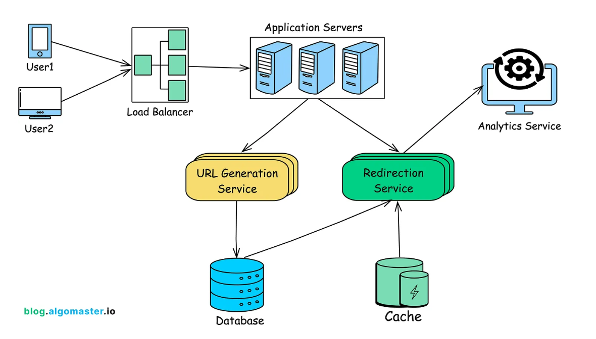

Designing a URL Shortener Service
A URL shortener service converts long URLs into shorter, unique aliases that redirect to the original URLs. This is particularly useful for sharing links on platforms with character limits or for creating cleaner, more manageable links.
1. Requirements Gathering
Functional Requirements:
- Generate a unique short URL for a given long URL.
- Redirect users to the original URL when the short URL is accessed.
- Allow users to customize their short URLs (optional).
- Support link expiration where URLs are inaccessible after a certain period.
- Provide analytics on link usage (optional).
Non-Functional Requirements:
- High availability (99.9% uptime).
- Low latency (operations should complete in milliseconds).
- Scalability (handle millions of requests per day).
- Durability (shortened URLs should remain functional for years).
- Security to prevent malicious use, such as phishing.
2. Capacity Estimation
Assumptions:
- Daily URL Shortening Requests: 1 million.
- Read:Write ratio: 100:1 (for every URL creation, 100 redirects).
- Peak Traffic: 10x the average load.
- Average original URL length: 100 characters.
Throughput Requirements:
- Average Writes Per Second (WPS): ~12.
- Peak WPS: ~120.
- Average Redirects per second (RPS): ~1,200.
- Peak RPS: ~12,000.
Storage Estimation:
- Storage per URL: ~127 bytes.
- Total Storage per Year: ~46.4 GB.
Bandwidth Estimation:
- Total Read Bandwidth per Day: ~50 GB.
- Peak Bandwidth: ~6 MB/s.
Caching Estimation:
- Cache Memory Required for Hot URLs: ~25.4 MB.
- Requests hitting the DB: ~120 RPS.
Infrastructure Sizing:
- API Servers: 4-6 instances behind a load balancer.
- Database: A distributed database with 10-20 nodes.
- Cache Layer: A distributed cache with 3-4 nodes.
3. High-Level Design
The system comprises several components:
- API Gateway: Handles incoming requests for URL shortening and redirection.
- Application Servers: Process business logic for creating and retrieving URLs.
- Database: Stores mappings between short URLs and original URLs.
- Cache: Speeds up retrieval of frequently accessed URLs.
- Analytics Service: Collects data on link usage (if implemented).

4. Detailed Component Design
4.1 API Gateway:
- Manages rate limiting and authentication.
- Routes requests to appropriate services.
4.2 Application Servers:
- Handle URL validation and processing.
- Generate unique short URLs using Base62 encoding.
- Check for custom alias conflicts.
- Interact with the database and cache.
4.3 Database:
- Stores URL mappings, creation dates, expiration dates, and click counts.
- Employs sharding and replication for scalability and reliability.
- For storing billions of records with mostly key-value lookups, a NoSQL database is ideal.
- Read operations dominate write operations, requiring efficient query handling.
- No need for table joins, simplifying the data model.
- High scalability and availability are crucial.
- DynamoDB or Cassandra are well-suited for these requirements.
4.4 Cache:
- Stores frequently accessed URL mappings to reduce database load.
- Uses an LRU eviction policy.
4.5 Analytics Service (Optional):
- Tracks metrics like click counts and geographic data.
- Stores aggregated data in a separate analytics database.
5. URL Generation Strategy
To generate unique short URLs:
- Use a Base62 encoding scheme (characters a-z, A-Z, 0-9).
- Maintain a global counter or utilize a distributed unique ID generator.
- Convert the counter value to a Base62 string to create the short URL.
6. Handling Expiration and Deletion
For URLs with expiration:
- Store expiration dates in the database.
- Implement a background job to remove expired URLs periodically.
- Return appropriate responses for expired URLs.
7. Security Considerations
- Implement rate limiting to prevent abuse.
- Validate input URLs to prevent malicious content.
- Use HTTPS to secure data in transit.
- Monitor for phishing attempts and misuse.
8. Scalability and Fault Tolerance
- Employ load balancers to distribute traffic.
- Use distributed databases and caching systems.
- Implement replication and failover mechanisms.
- Design stateless application servers to allow horizontal scaling.
9. Conclusion
Designing a URL shortener involves careful consideration of scalability, performance, and security.
By addressing these aspects, the service can efficiently handle high traffic volumes while providing a reliable user experience.